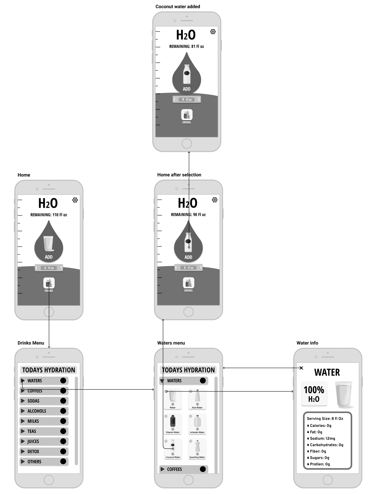

H2Organizer is a straightforward app that allows the user to effectively track water and other drink consumption. My focus with this project was on Interaction Design. My goals were two-fold: to create a highly intuitive design and create interactions that are rewarding to the user and promote further use.
Project Info
My Role
Tools used
To no surprise, there is a wide variety of water tracker apps in the app store. What came as more of a surprise was the lack of good ones. I saw overly complicated and thus overwhelming apps. These are one-task apps, they should be as intuitive and simple as it gets. I also saw a lack of rewarding visuals and animations; with something so simple there is a good opportunity to build polished interactive animations that reward the user for using the app.
The Problems:
Simplicity is the name of the game here. In creating my wireframes I wanted designs that allowed for comprehensive and rewarding interactives and a straight forward task-flow.
Design Goals:

My initial wire flow was my first chance to showcase the simple task flow I wanted to implement. The task flow can be achieved in 1-4 clicks.
Designing quality interactive animations for my app was one of the main goals of this project. I wanted some light and fun animations that rewarded the user for completing certain tasks within the app. Additionally, I wanted my interactives to contribute to the simplicity and intuitiveness of my app. I began my ideation process with sketches of potential interactive animations. I then chose the best after personal analysis and peer review. After that I mapped out the flow and definition of these interactions.